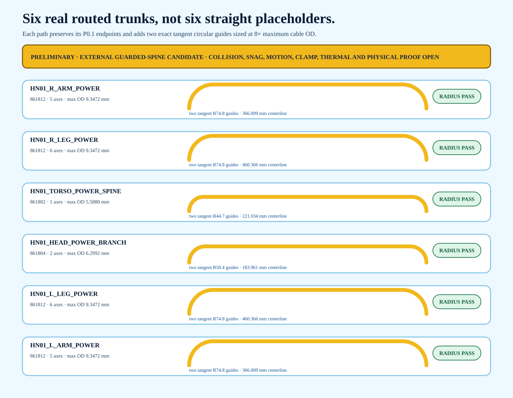

6 / 6
dimensioned centerline-radius screens pass
HR-30 whole-body P0.1
Six straight corridor placeholders have been replaced by editable tangent route centerlines. Each trunk leaves the body, follows a guarded external spine, and returns without violating the candidate cable's published 8× maximum-OD bend rule.
dimensioned centerline-radius screens pass
exact tangent quarter-circle guides
parameter-located clamp obligations
executed whole-body collision or walking sweeps
Editable route-guide STEP · Route-only GLB · Exact route register

The paths use a shared construction: a 90-degree circular entry guide, a straight external spine, and a 90-degree circular exit guide. The arcs are tangent to the spine and use the cable-specific minimum planning radius. The centerline length is a CAD result—not a production cut length.
| Corridor | Cable | Axes | Max OD mm | Guide R mm | Centerline mm | Screen |
|---|---|---|---|---|---|---|
| HN01_HEAD_POWER_BRANCH | 861804 | 2 | 6.2992 | 50.3936 | 183.961 | PASS GEOMETRIC CENTERLINE RADIUS |
| HN01_L_ARM_POWER | 861812 | 5 | 9.3472 | 74.7776 | 366.009 | PASS GEOMETRIC CENTERLINE RADIUS |
| HN01_L_LEG_POWER | 861812 | 6 | 9.3472 | 74.7776 | 460.366 | PASS GEOMETRIC CENTERLINE RADIUS |
| HN01_R_ARM_POWER | 861812 | 5 | 9.3472 | 74.7776 | 366.009 | PASS GEOMETRIC CENTERLINE RADIUS |
| HN01_R_LEG_POWER | 861812 | 6 | 9.3472 | 74.7776 | 460.366 | PASS GEOMETRIC CENTERLINE RADIUS |
| HN01_TORSO_POWER_SPINE | 861802 | 1 | 5.5880 | 44.7040 | 221.034 | PASS GEOMETRIC CENTERLINE RADIUS |
full-body pose and collision envelope
run exact neutral/crouch/weight-transfer/step/fall-restraint sweeps with guards and tether
external-spine snag and human-contact risk
rounded guard design plus qualified hazard review and physical mockup
received cable OD and bend applicability
supplier CoC/datasheet, received-lot OD, construction and written application disposition
route cut lengths and service slack
measure on assembled body through complete joint range; do not use centerline length as cut length
clamp and guard hardware
exact parts, materials, fasteners, access, retention, pull/chafe and impact tests
dynamic flex and torsion life
motion-spectrum cycling at min/max temperature with post-test electrical and jacket inspection
connector/breakout loads
breakout ECAD/mechanical design plus strain relief and connector qualification
bundle thermal and current derating
measured duty/current distribution and worst-case enclosed temperature-rise test
walking and fall-clearance proof
instrumented restrained walking development with guard-contact monitoring after unpowered sweeps
qualified electrical/mechanical approval
signed configuration review after all preceding evidence exists
Centerlines · Clamps · Guards · Open holds · Sources · Status
No route is released for cutting, connection, motion or energization.